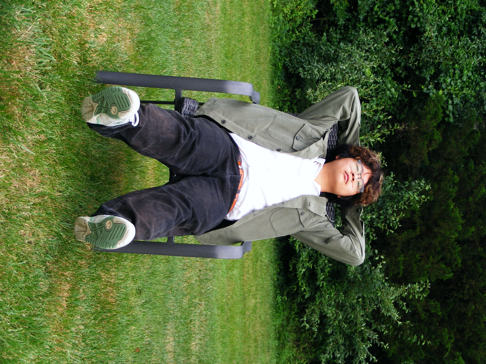

brandon shen (b. 2006), is a chinese-american composer, performer, multimedia artist, and administrator born in Fairfax, VA. as an artist i am interested in exploring contemporary image-saturated reality and ecological relationships through multimedia. as an administrator i prioritize the promotion of interdisciplinary collaboration and thinking in pursuit of cross-pollination between communities.
currently i am a composition, humanities, and arts administration student at the University of Texas at Austin on exchange at the Sibelius Academy of Uniarts Helsinki, Finland until May 2027. my work has been presented by events/venues including the Northern American Saxophone Alliance, CAST festival, dadaLab, ICEBERG New Music, and Electric LA-TEX festival in collaboration with groups including Contemporary Art Music Project (CAMP), Zed, and 4116.
